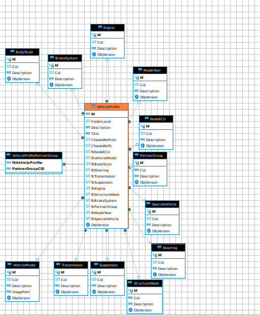
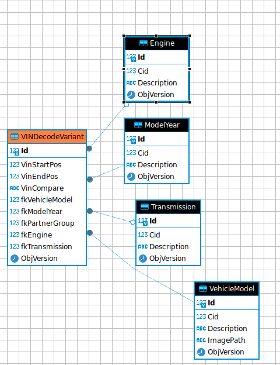
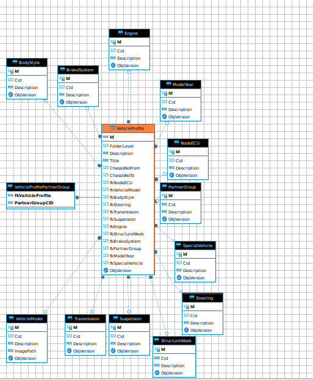
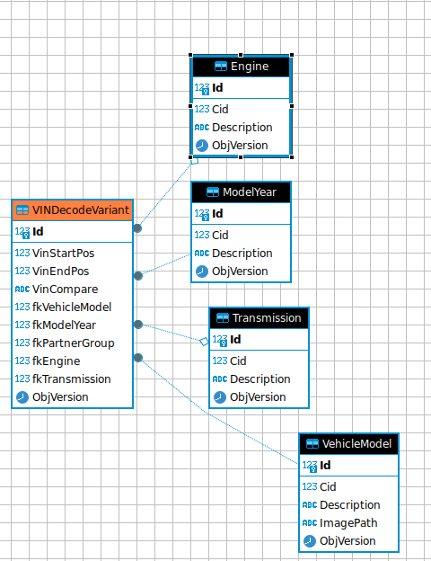

basedata¶
in the BASEDATA database you can find data about models, engines, constructionyear
so V50 has ID=1015 in (Vehiclemodel) (VehicleProfile 0b00c8af839ead7d) 50, 2008, D4164T, 5DRS W/O S.R
 in the BASEDATA database you can find data about models, engines, constructionyear
so V50 has ID=1015 in (Vehiclemodel) (VehicleProfile 0b00c8af839ead7d) 50, 2008, D4164T, 5DRS W/O S.R
 